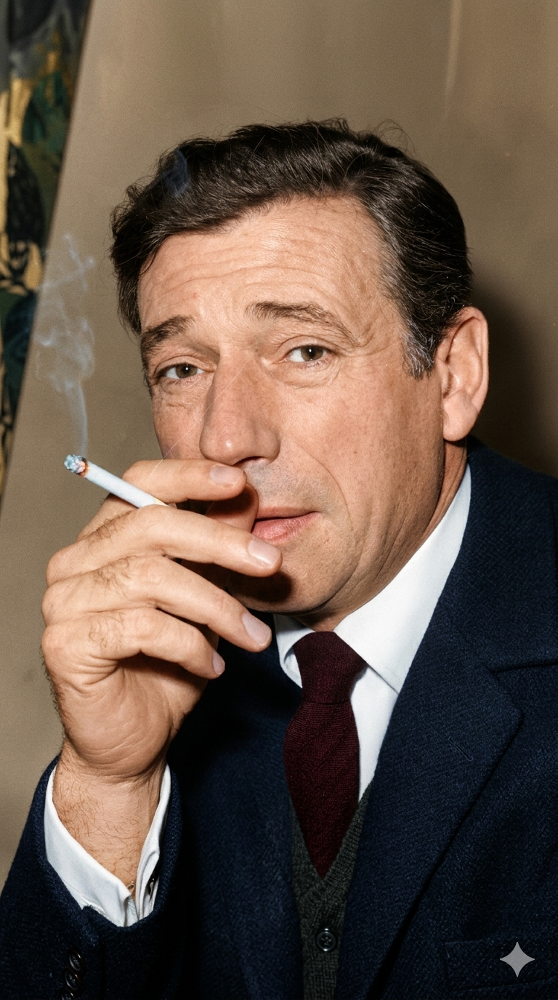

איב מונטאן
Yves Montand
אטימולוגיה ומקור השם המלא
שם מקורי: איבו ליווי (Ivo Livi)
איב מונטאן נולד באיטליה.
Ivo: שם גרמאני עתיק שמשמעותו קשורה ל"עץ הטקסוס" (עץ חזק ששימש לקשתות).
Livi: שם משפחה איטלקי ממקור יהודי (לוי). סבו מצד אביו אכן היה יהודי איטלקי.
שם הבמה: איב (Yves)
זוהי פשוט הגרסה הצרפתית (והאלגנטית יותר למשמע אוזן מקומית) לשמו המקורי האיטלקי "איבו".
שם משפחה במה: מונטאן (Montand)
שם הבמה המפורסם נוצר כמחווה פונטית מתוקה לזיכרון ילדות. אמו (ג'וזפינה), שלא דיברה צרפתית היטב, הייתה קוראת לו מהחלון לעלות הביתה כשהיה משחק ברחוב, בשילוב של איטלקית וצרפתית משובשת: "Ivo, monta!" (איבו, תעלה!). הצליל החרוט בזיכרונו הפך ל"מונטאן".
ילדות
נולד בעיירה בטוסקנה, איטליה. כשהיה בן שנתיים בלבד, נאלצה משפחתו לברוח מאיטליה הפאשיסטית של מוסוליני (אביו ג'ובאני היה קומוניסט אדוק) והם השתקעו במרסיי שבדרום צרפת. הוא גדל בעוני כבד באזור קשה של העיר. בגיל 11 נאלץ לעזוב את בית הספר כדי לעזור בפרנסת המשפחה. הוא עבד במפעל אטריות, כשוליה במספרה, וכפועל במספנות של מרסיי. למרות הקושי, היה מוקסם לחלוטין מהקולנוע האמריקאי, בעיקר מהשחקן והרקדן פרד אסטר, והחל לנסות לחקות את הופעותיו ואת שירי הבוקרים במסבאות המקומיות של מרסיי, לפני שניסה את מזלו בפריז.
אידאולוגיה והישגים
אמן במה מושלם וקשר עם פיאף: מונטאן התגלה בפריז ב-1944 על ידי אדית פיאף. היא הפכה למנטורית המקצועית שלו ולמאהבתו, ועיצבה את סגנונו לחלוטין. היא יעצה לו לזנוח את שירי הבוקרים שאיתם הופיע, ולשיר שירים רומנטיים ופריזאיים. הוא הפך ל"שואו-מן" אדיר, המשלב שירה צרפתית קלאסית עם תנועה וריקוד בסגנון הוליוודי.
אידאולוגיה פוליטית (שמאל וביקורת): בניגוד להרבה שאנסונרים ששמרו על חזית ניטרלית, מונטאן (יחד עם אשתו המפורסמת, השחקנית סימון סיניורה) היה מזוהה במשך שנים רבות עם השמאל הרדיקלי והמפלגה הקומוניסטית בצרפת. עם זאת, בעקבות הפלישה הסובייטית לפראג (1968), הוא התפכח באומץ מול הציבור, ושיחק בסרטים ביקורתיים נגד טוטליטריות של השמאל (כמו בסרטיו של קוסטה-גברס "Z" ו"ההודאה").
קריירת משחק בינלאומית מזהירה: מעבר להיותו אחד מגדולי הזמרים הצרפתים, מונטאן טיפח קריירת קולנוע אדירה. הוא שיחק בהוליווד לצד כוכבות כמו מרילין מונרו (בסרט "הבה נאהב"), והיה לאחד השחקנים האירופאים המעטים בהיסטוריה שזכו למעמד של כוכב על עולמי כפול (הן במוזיקה והן בקולנוע).